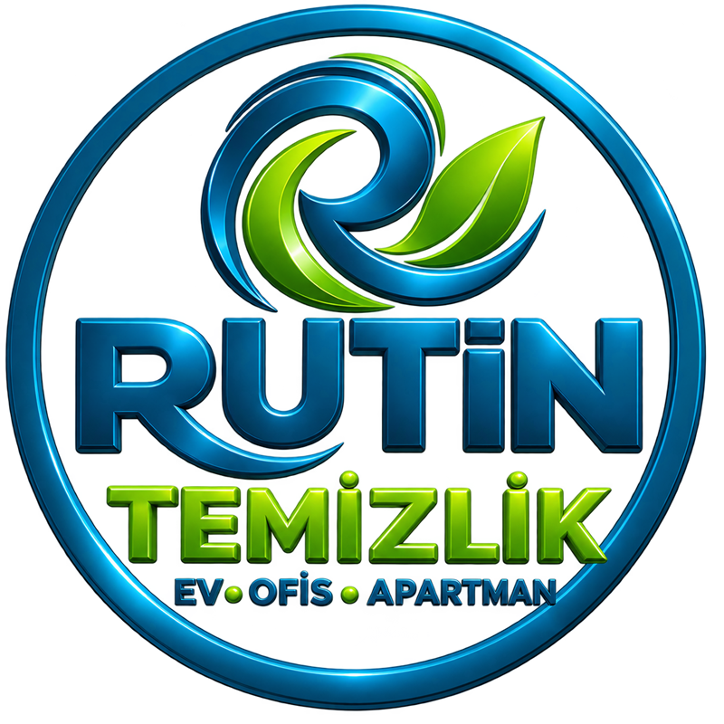

Üç ilçede, randevu saatinde gelen ekip
Tabela aramayın; adresinize geliyoruz. Ev, ofis ve apartman ortak alanlarında düzenli, özenli temizlik.
 Ne iş yapıyoruz
Ne iş yapıyoruz
Rutin Temizlik, Antalya’nın Konyaaltı, Muratpaşa ve Kepez ilçelerinde temizlik yapar. Bu üç ilçenin kayıtlı tüm mahallelerine geliyoruz: Konyaaltı’nda 39, Muratpaşa’da 55, Kepez’te 68 mahalle.
Evde yer, mutfak, banyo ve ulaşılabilen toz işi yapılır. Ofiste evraka dokunulmaz; saat, dükkânın açılışına veya kapanışına göre ayarlanır. Apartmanda merdiven, korkuluk, asansör ve giriş temizlenir.
Hat haftanın 7 günü açıktır. Ekip, kararlaştırdığımız saatte gelir. İki numara: +90 (533) 097 89 24 ve +90 (505) 068 03 07. Instagram: @rutintemizlikantalya.
 Nasıl çalışıyoruz
Nasıl çalışıyoruz
Odak noktamız yaşamaya ve çalışmaya uygun mekânlardır: oturulan ev, çalışan ofis ve apartman ortak alanları. Sabit dükkânımız yok; ekip sizin adresinize gelir.
Camın iç yüzeyi ev ve ofis işine dahildir. Ekip malzemesini yanında getirir; iş bitince alanı toplar.
Almadığımız işler nettir: inşaat/şantiye temizliği, moloz-alçı-boya kazıma, halı yıkama. Molozu çıkmış, oturmaya hazır dairedeki normal temizlik alınır.
Randevu WhatsApp veya iletişim formu ile: ilçe, mahalle, oda/metrekare ve istediğiniz gün yazmanız yeterlidir. Yayınlanmış sabit fiyat listemiz yok; rakam mesajda netleşir.



Bir ziyaret
Kapıdan çıkışa kadar
-
Mesaj
İlçe, mahalle, daire tipi veya ofis ölçüsü ve gün yazılır. Rakam bu bilgiyle netleşir.
-
Varış
Ekip kendi kovası, bezi ve yer deterjanıyla gelir. Sizden ürün istemeyiz; özel ürün istiyorsanız mesajda belirtin.
-
Çıkış
Islak zemin silinmiş olur, çöpler poşetlenir, malzeme apartmanda bırakılmaz.
Ayrıntılı kapsam hizmetler sayfasında. Randevu için iletişim formu WhatsApp sohbetini açar.